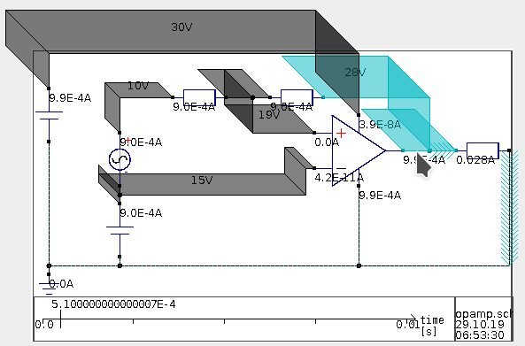

Hovering
Hovering is a functionality, which allows you to hover the mouse position over a wire: When hovering is active, then that wire, and all other wires of the same node are marked in a pre-defined color.
This functionality may be useful, if you are explaining a circuit to somebody, because this way you can highlight the node which you are talking about. This way it is easier to directly see which one you mean instead of having to compare nodenames.
Example
Hovering can look like this example below. In that image, the mouse points at the wire at the output of the OpAmp. Because of that, the wire and the both other wires which are connected to that first wire are marked in blue.
